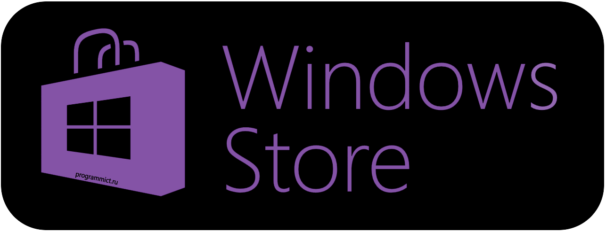
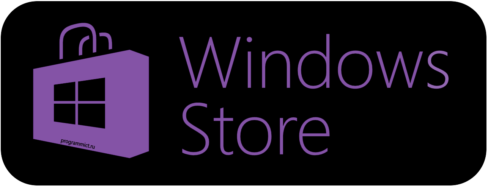

Product
Datang untuk membuat perubahan, Gamel-AR menawarkan aplikasi inovatif menggunakan teknologi mutakhir tanpa melupakan warisan budaya tradisional Indonesia. Gamel-AR hadir sebagai perpaduan alat musik asli Indonesia, Gamelan, dengan teknologi Augmented Reality yang dapat membawa anda menabuh Gamelan dengan sensasi berbeda.
Gamel-AR siap mengantarkan Gamelan sedekat sentuhan jari, hanya dengan smartphone Android kesayangan anda.
Budaya merupakan kata yang tidak bisa dipisahkan dari suatu negara, terutama untuk negara Indonesia yang dikenal memiliki keanekaragaman seni dan budaya dari Sabang sampai Merauke. Namun kenyataannya, perkembangan budaya di Indonesia semakin hari semakin berkurang akibat pengaruh globalisasi.
Terdapat beberapa faktor yang menyebabkan kebudayaan Indonesia cenderung dilupakan, salah satunya adalah konsumsi gadget yang berlebihan, khususnya smartphone. Dengan segala kemudahan dan keunggulan, smartphone menjadi perangkat yang paling sering diakses di watu luang. Memanfaatkan potensi tersebut, dibuatlah aplikasi augmented reality berbasis Android yang bernama Gamel-AR.
Gamel-AR adalah aplikasi yang beroperasi pada perangkat dengan sistem operasi Android. Aplikasi ini dibuat menggunakan metode markerless Augmented Reality, sehingga tidak diperlukan marker untuk menampilkan 3D gamelan. Selain itu, aplikasi ini juga memiliki fitur playable interactive sehingga user dapat memainkan gamelan yg ditampilkan.
Download
"But I must explain to you how all this mistaken idea of denouncing pleasure and praising pain was born and I will give you a complete account of the system, and expound the actual teachings of the great explorer of the truth, the master-builder of human happiness. No one rejects, dislikes, or avoids pleasure itself, because it is pleasure, but because those who do not know how to pursue pleasure rationally encounter consequences that are extremely painful. Nor again is there anyone who loves or pursues or desires to obtain pain of itself, because it is pain, but because occasionally circumstances occur in which toil and pain can procure him some great pleasure. To take a trivial example, which of us ever undertakes laborious physical exercise, except to obtain some advantage from it? But who has any right to find fault with a man who chooses to enjoy a pleasure that has no annoying consequences, or one who avoids a pain that produces no resultant pleasure?"
 


About Us
Kalo jump kesini berarti uda bener :D
"At vero eos et accusamus et iusto odio dignissimos ducimus qui blanditiis praesentium voluptatum deleniti atque corrupti quos dolores et quas molestias excepturi sint occaecati cupiditate non provident, similique sunt in culpa qui officia deserunt mollitia animi, id est laborum et dolorum fuga. Et harum quidem rerum facilis est et expedita distinctio. Nam libero tempore, cum soluta nobis est eligendi optio cumque nihil impedit quo minus id quod maxime placeat facere possimus, omnis voluptas assumenda est, omnis dolor repellendus. Temporibus autem quibusdam et aut officiis debitis aut rerum necessitatibus saepe eveniet ut et voluptates repudiandae sint et molestiae non recusandae. Itaque earum rerum hic tenetur a sapiente delectus, ut aut reiciendis voluptatibus maiores alias consequatur aut perferendis doloribus asperiores repellat."
Back to the top